مجانيبلا تسجيلالصوت بالدارجة
وجّد لامتحان رخصة السياقة، سؤال بسؤال
5,379 سؤال من الامتحان بالصورة والصوت، كتجاوب وكتعرف واش صبتي مع الشرح. والإشارات، الدروس، النصائح والحالات. كيخدم فالتيليفون والحاسوب.
- 5,379سؤال بالصوت
- 154سلسلة
- 249إشارة
- 32درس
- 478نصيحة
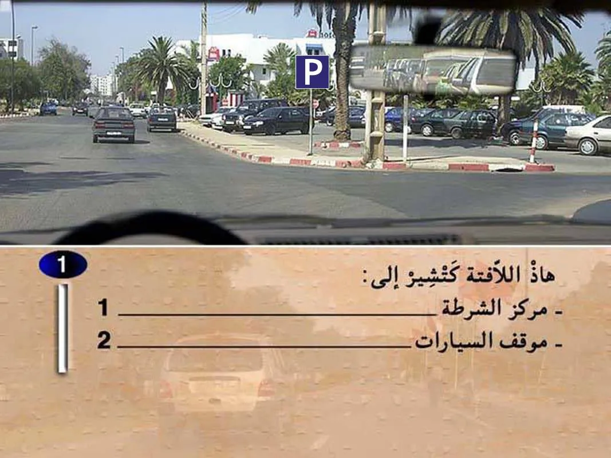
1234
السلسلة 1 · السؤال 1جرّب ←
01
سلسلات الامتحان
اختار الصنف ديال الرخصة ديالك. كل سلسلة كتدوزها بحال الامتحان الحقيقي، والتقدّم كيتسجّل.
02
الإشارات الطرقية
249 إشارة مقسّمة على 8 أنواع، بالمعنى والصوت. فيها وضع تختبر فيه راسك.


03
الدروس
32 درس بالصور: قواعد السير، التشوير، الحوادث والإسعافات…
- 01الإشارات الطرقية2 ص
- 02التشوير الافقي1 ص
- 03قواعد السير1 ص
- 04الحوادث و الاسعافات1 ص
- 05رد الفعل1 ص
- 06المسافات2 ص
- 07الطريق السيار4 ص
- 08علامات الخطر5 ص
- 09علامات المنع6 ص
- 10علامات الإجبار3 ص
- 11علامات الإرشاد3 ص
- 12علامات الاتجاه3 ص
- 13العلامات الصغرى1 ص
- 14الخطوط2 ص
- 15الأسهم2 ص
- 16الأرمات و الصوى1 ص
- 17قاعدة الأسبقية4 ص
- 18قاعدة التجاوز4 ص
- 19قاعدة التقابل2 ص
- 20قاعدة الوقوف و التوقف2 ص
- 21الأضواء و الإشارات2 ص
- 22أضواء السيارة2 ص
- 23الأضواء الجاذبة3 ص
- 24العقوبات الإدارية2 ص
- 25النقط3 ص
- 26حوادث جسمانية2 ص
- 27المعاينة الودية1 ص
- 28العربة و الاضاءة6 ص
- 29انواع الطريق4 ص
- 30التشوير الطرقي29 ص
- 31قواعد السير15 ص
- 32الحوادث و الغرامات9 ص
04
النصائح
478 نصيحة بالصورة والشرح، مقسّمة على المواضيع.
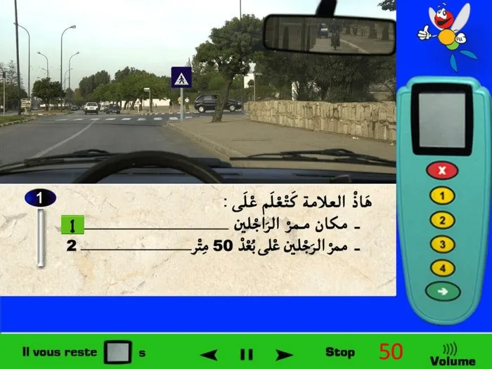
سلسلات التّشوير الطرقي
51 نصيحة
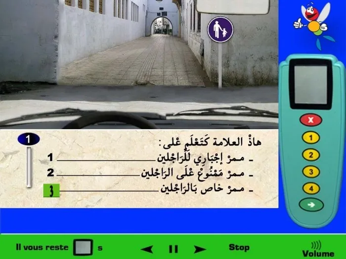
التشوير الطرقي (الجزء 2)
53 نصيحة
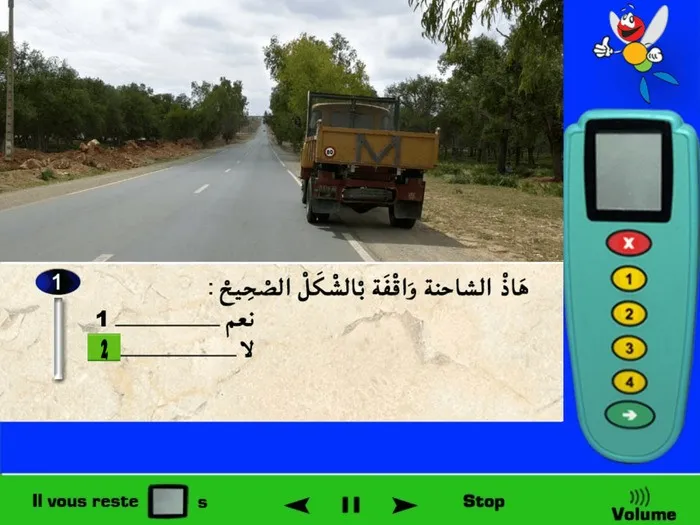
سلسلات الوقوف والتوقّف
31 نصيحة
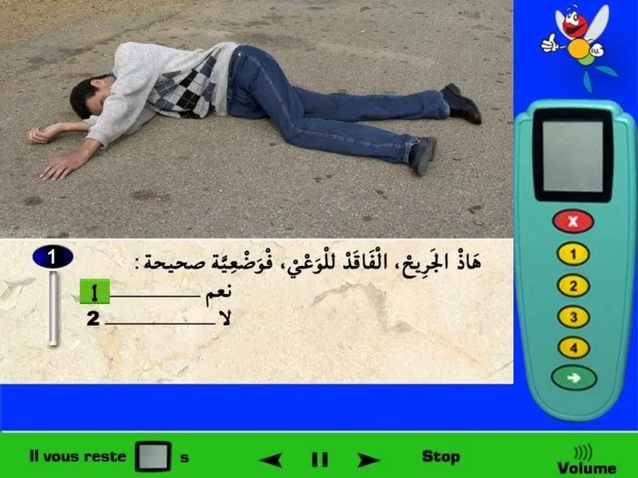
حوادث واسعافات
20 نصيحة

إعطاء حق الأسبقية
79 نصيحة
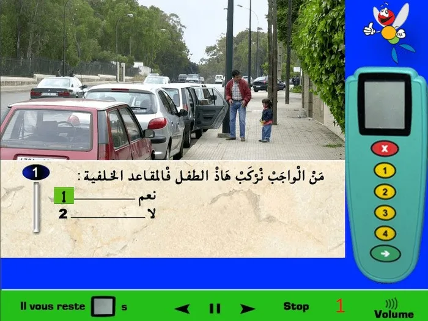
سلسلات لمفاهيم تطبيقية
33 نصيحة
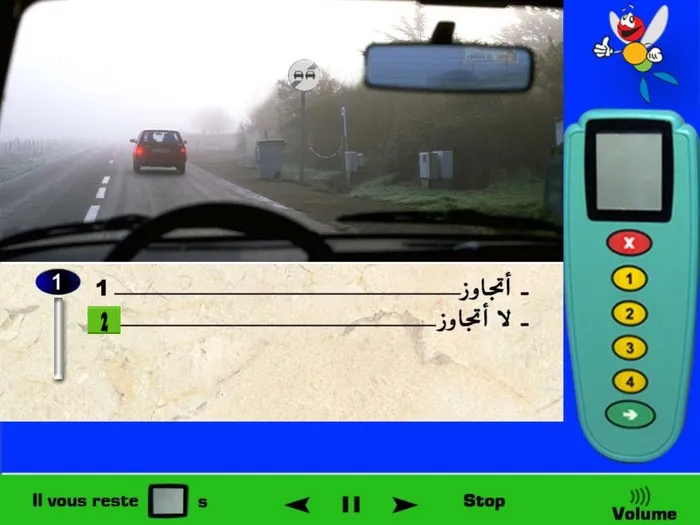
سلسلات التّجاوز والتّقابل
50 نصيحة
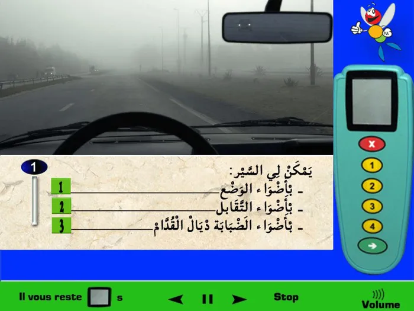
سلسلات الرؤية والإضاءة
25 نصيحة
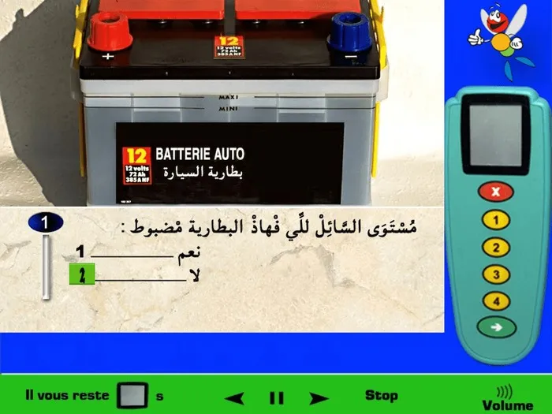
سلسلات أسئلة العربة
37 نصيحة
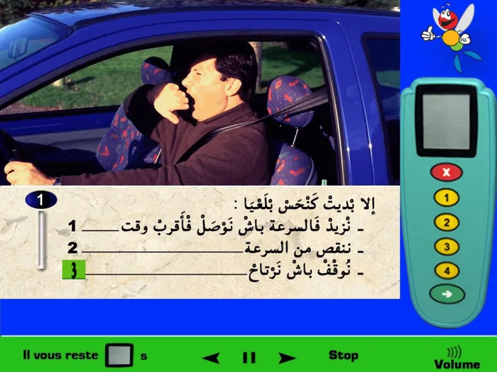
سلسلات السائق
37 نصيحة
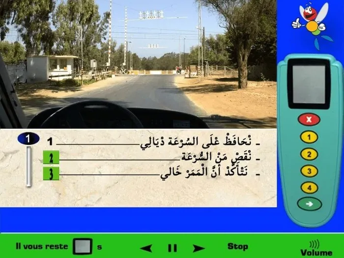
سلسلات قواعد السّير
62 نصيحة
05